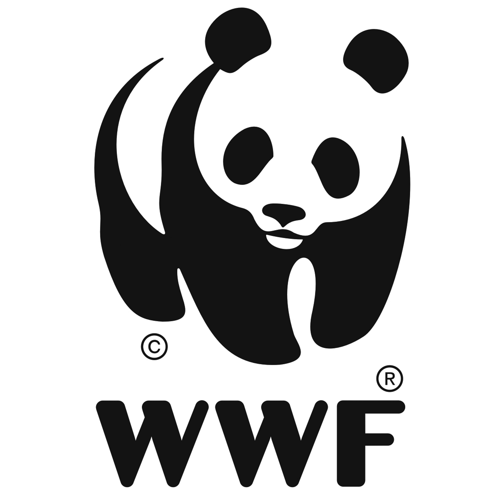

L'éléphant rose de Chavant est un animal en voie de disparition, c'est pourquoi nous nous mobilisons pour sa préservation et sa qualité de vie dans son milieu natal, soit le sous sol du cinéma Chavant en plein coeur de Grenoble.

Ernest notre 1er éléphant rose rescapé. Pour information, c'est l'éléphant qui fut utilisé pour le logo Delirium. C'est une vraie star!

Nos locaux se trouvent en dessous du cinéma Chavant
Ernest était menacé par les braconniers dans son pays d'origine. Alors qu'il se baladait dans la savane à la recherche du Marsupilami, Julien a entendu des coups de fusils. Il s'est précipité et a découvert Ernest apeuré. Les braconniers n'étaient pas loin, il fallait faire vite...Julien installa sa selle à éléphant sur Ernest et le guida à travers la savane, jusqu'à arriver à notre havre de paix qu'est le sous-sol du cinéma Chavant.

Vous pouvez nous soutenir financièrement, directement en passant par la page Contact et effectuer un DON, où en achetant un produit directement sur notre BOUTIQUE(cliquez ici). Vous pouvez trouver des produits tels que:
- Peluche

- Lampe

- Dérouleur PQ

Ils nous aident à la sauvegarde et à la sensibilisation des éléphants roses :
